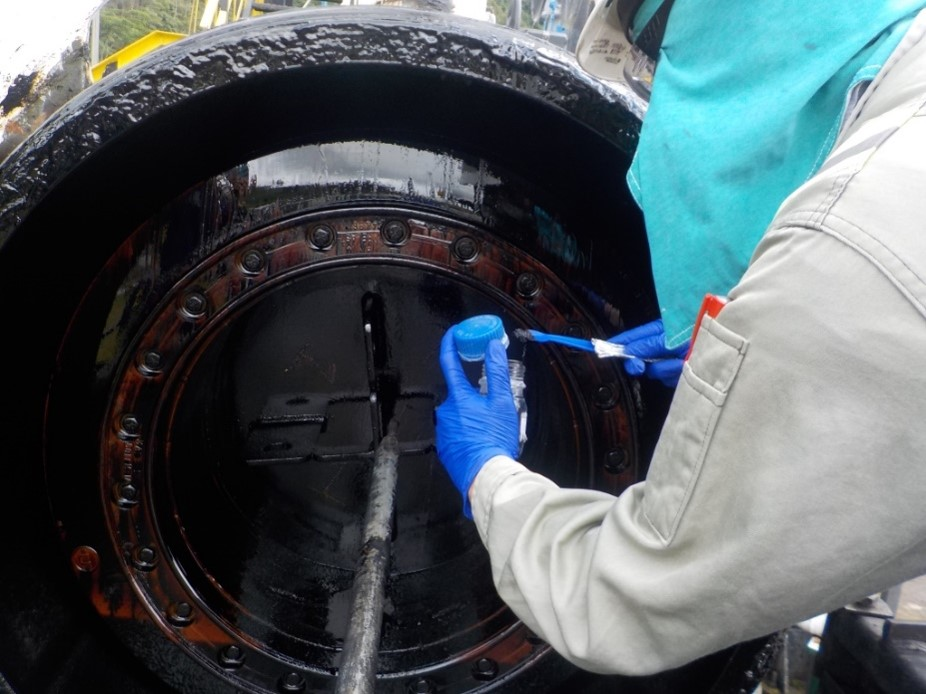
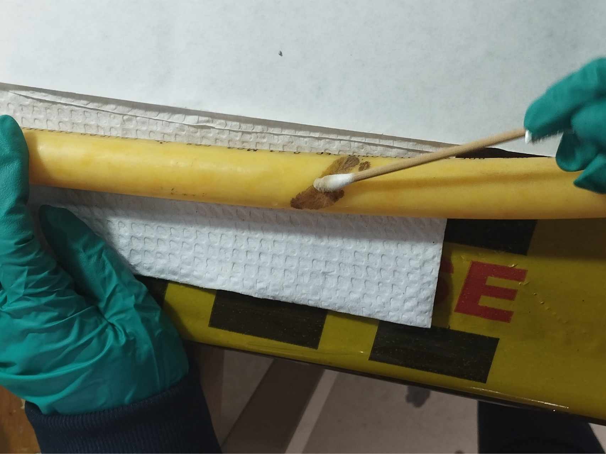

Inicio
CIC
Servicios
Productos
Contacto
Nuestros productos
Muestras Sólidas

Kit para la recolección de muestras solidas asociadas a procesos de crecimiento microbianos.
Ficha Técnica
Ficha de Seguridad
Enlace Capacitación
Muestras Superficies

Kit para toma de muestras de agentes microbianos asociados a la formación de biopelículas en superficies.
Ficha Técnica
Ficha de Seguridad
Enlace Capacitación
Muestras Líquidas
Kit para la recolección de muestras líquidas asociadas a procesos de crecimiento microbianos.
Ficha Técnica
Ficha de Seguridad
Enlace Capacitación
Volver
Corporación para la Investigación de la Corrosión - CIC